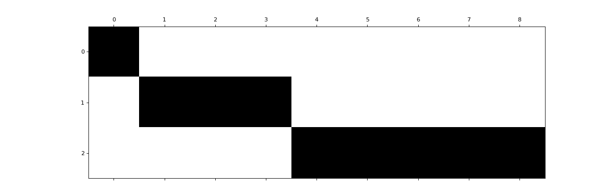

spharpy.spherical#
Functions:
|
Calculate the order n and degree m from the linear coefficient index. |
|
Aperture function for a vibrating spherical cap. |
|
Change the channel convention of spherical harmonics coefficients or basis functions. |
|
Calculate the spherical harmonic order n and degree m for a linear coefficient index, according to the FuMa (Furse-Malham) Channel Ordering Convention [1]. |
|
Modal strength function for microphone arrays. |
|
Calculate the scaling factor which converts from N3D (normalized 3D) normalization to max N normalization. |
Calculate the scaling factor which converts from N3D (normalized 3D) normalization to SN3D (Schmidt semi-normalized 3D) normalization. |
|
|
Calculate the linear index coefficient for a order n and degree m, |
|
Calculate the FuMa channel index for a given spherical harmonic order n and degree m, according to the FuMa (Furse-Malham) Channel Ordering Convention. |
|
Radiation function in SH for a vibrating spherical cap. |
|
Renormalize spherical harmonics coefficients or basis functions. |
|
Calculates the SID indices up to spherical harmonic order n_max. |
|
Convert from SID channel indexing to ACN indeces. |
|
Calculate a spherical harmonic identity matrix. |
|
Calculates the complex valued spherical harmonic basis matrix. |
|
Calculates the unit sphere gradients of the complex spherical harmonics. |
Calculates the unit sphere gradients of the real valued spherical harmonics. |
|
|
Calculates the real valued spherical harmonic basis matrix. |
- spharpy.spherical.acn_to_nm(acn)[source]#
Calculate the order n and degree m from the linear coefficient index.
The linear index corresponds to the Ambisonics Channel Convention [2].
\[ \begin{align}\begin{aligned}n = \lfloor \sqrt{\mathrm{acn} + 1} \rfloor - 1\\m = \mathrm{acn} - n^2 -n\end{aligned}\end{align} \]References
- Parameters:
acn (ndarray, int) – Linear index
n (ndarray, int) – Spherical harmonic order
m (ndarray, int) – Spherical harmonic degree
- spharpy.spherical.aperture_vibrating_spherical_cap(n_max, rad_sphere, rad_cap)[source]#
Aperture function for a vibrating spherical cap.
The cap has radius \(r_c\) and is mounted in a rigid sphere with radius \(r_s\) [3], [4]
\[a_n (r_{s}, \alpha) = 4 \pi \begin{cases} \displaystyle \left(2n+1\right)\left[ P_{n-1} \left(\cos\alpha\right) - P_{n+1} \left(\cos\alpha\right) \right], & {n>0} \newline \displaystyle (1 - \cos\alpha)/2, & {n=0} \end{cases}\]where \(\alpha = \arcsin \left(\frac{r_c}{r_s} \right)\) is the aperture angle.
- Parameters:
n_max (integer, ndarray) – Maximal spherical harmonic order
r_sphere (double, ndarray) – Radius of the sphere
r_cap (double) – Radius of the vibrating cap
- Returns:
A – Aperture function in diagonal matrix form with shape \([(n_{max}+1)^2~\times~(n_{max}+1)^2]\)
- Return type:
ndarray, float
References
Notes
Eq. (3) in the second Ref. contains an error, here, the power of 2 on pi is omitted on the normalization term.
- spharpy.spherical.change_channel_convention(data, current, target, axis)[source]#
Change the channel convention of spherical harmonics coefficients or basis functions.
- Parameters:
data (ndarray) – Data of which channel convention should be changed. Either spherical harmonics coefficients or bases functions.
current (str) – Current channel convention. Valid conventions are “acn” or “fuma”.
target (str) – Desired channel convention. Valid conventions are “acn” or “fuma”.
axis (integer) – Axis along which the channel convention should be changed
- Returns:
data – Data with changed channel convention
- Return type:
ndarray
- spharpy.spherical.fuma_to_nm(fuma)[source]#
Calculate the spherical harmonic order n and degree m for a linear coefficient index, according to the FuMa (Furse-Malham) Channel Ordering Convention [5].
FuMa = WXYZ | RSTUV | KLMNOPQ ACN = WYZX | VTRSU | QOMKLNP
- Parameters:
fuma (integer, ndarray) – FuMa channel index
- Returns:
n (integer, ndarray) – Spherical harmonic order
m (integer, ndarray) – Spherical harmonic degree
References
- spharpy.spherical.modal_strength(n_max, kr, arraytype='rigid')[source]#
Modal strength function for microphone arrays.
\[b(kr) = \begin{cases} \displaystyle 4\pi i^n j_n(kr), & \text{open} \newline \displaystyle 4\pi i^{(n-1)} \frac{1}{(kr)^2 h_n^\prime(kr)}, & \text{rigid} \newline \displaystyle 4\pi i^n (j_n(kr) - i j_n^\prime(kr)), & \text{cardioid} \end{cases}\]This implementation uses the second order Hankel function, see [6] for an overview of the corresponding sign conventions.
References
- Parameters:
n_max (int) – The spherical harmonic order
kr (ndarray, float) – Wave number * radius
arraytype (string) – Array configuration. Can be a microphones mounted on a rigid sphere, on a virtual open sphere or cardioid microphones on an open sphere.
- Returns:
B – Modal strength diagonal matrix
- Return type:
ndarray, float
- spharpy.spherical.n3d_to_maxn(acn)[source]#
Calculate the scaling factor which converts from N3D (normalized 3D) normalization to max N normalization. ACN must be less or equal to 15.
- Parameters:
acn (integer, ndarray) – linear index
- Returns:
maxN – Scaling factor which converts from N3D to max N
- Return type:
float
- spharpy.spherical.n3d_to_sn3d_norm(n)[source]#
Calculate the scaling factor which converts from N3D (normalized 3D) normalization to SN3D (Schmidt semi-normalized 3D) normalization.
- Parameters:
n (integer, ndarray) – Spherical harmonic order
- Returns:
sn3d – normalization factor which converts from N3D to SN3D
- Return type:
float, ndarray
- spharpy.spherical.nm_to_acn(n, m)[source]#
Calculate the linear index coefficient for a order n and degree m,
The linear index corresponds to the Ambisonics Channel Convention [7].
\[\mathrm{acn} = n^2 + n + m\]References
- Parameters:
n (ndarray, int) – Spherical harmonic order
m (ndarray, int) – Spherical harmonic degree
- Returns:
acn – Linear index
- Return type:
ndarray, int
- spharpy.spherical.nm_to_fuma(n, m)[source]#
Calculate the FuMa channel index for a given spherical harmonic order n and degree m, according to the FuMa (Furse-Malham) Channel Ordering Convention.
- Parameters:
n (integer, ndarray) – Spherical harmonic order
m (integer, ndarray) – Spherical harmonic degree
- Returns:
fuma – FuMa channel index
- Return type:
integer
References
- spharpy.spherical.radiation_from_sphere(n_max, rad_sphere, k, distance, density_medium=1.2, speed_of_sound=343.0)[source]#
Radiation function in SH for a vibrating spherical cap. Includes the radiation impedance and the propagation to a arbitrary distance from the sphere. The sign and phase conventions result in a positive pressure response for a positive cap velocity with the intensity vector pointing away from the source. [8], [9]
TODO: This function does not have a test yet.
References
- Parameters:
n_max (integer) – Maximal spherical harmonic order
rad_sphere (float) – Radius of the sphere
k (ndarray, float) – Wave number
distance (float) – Radial distance from the center of the sphere
density_medium (float) – Density of the medium surrounding the sphere. Default is 1.2 for air.
speed_of_sound (float) – Speed of sound in m/s
- Returns:
R – Radiation function in diagonal matrix form with shape \([K \times (n_{max}+1)^2~\times~(n_{max}+1)^2]\)
- Return type:
ndarray, float
- spharpy.spherical.renormalize(data, channel_convention, current_norm, target_norm, axis)[source]#
Renormalize spherical harmonics coefficients or basis functions.
- Parameters:
data (ndarray) – Data which should be renormalized, either spherical harmonics coefficients or basis functions.
channel_convention (str) – Channel convention of the data which should be renormalized. Valid conventions are “acn” or “fuma”.
current_norm (str) – Current normalization. Valid normalizations are “n3d”, “maxN”, or “sn3d”.
target_norm (str) – Desired normalization. Valid normalizations are “n3d”, “maxN”, or “sn3d”.
axis (integer) – Axis along which the renormalization should be applied
- Returns:
data – Renormalized data
- Return type:
ndarray
- spharpy.spherical.sid(n_max)[source]#
Calculates the SID indices up to spherical harmonic order n_max. The SID indices were originally proposed by Daniel [10], more recently ACN indexing has been favored and is used in the AmbiX format [11].
- Parameters:
n_max (int) – The maximum spherical harmonic order
- Returns:
sid_n (ndarray, int) – The SID indices for all orders
sid_m (ndarray, int) – The SID indices for all degrees
References
- spharpy.spherical.sid_to_acn(n_max)[source]#
Convert from SID channel indexing to ACN indeces. Returns the indices to achieve a corresponding linear acn indexing.
- Parameters:
n_max (int) – The maximum spherical harmonic order.
- Returns:
acn – The SID indices sorted according to a respective linear ACN indexing.
- Return type:
ndarray, int
- spharpy.spherical.sph_identity_matrix(n_max, type='n-nm')[source]#
Calculate a spherical harmonic identity matrix.
- Parameters:
n_max (int) – The spherical harmonic order.
type (str, optional) – The type of identity matrix. Currently only ‘n-nm’ is implemented.
- Returns:
identity_matrix – The spherical harmonic identity matrix.
- Return type:
ndarray, int
Examples
The identity matrix can for example be used to decompress from order only vectors to a full order and degree representation.
>>> import spharpy >>> import matplotlib.pyplot as plt >>> n_max = 2 >>> E = spharpy.spherical.sph_identity_matrix(n_max, type='n-nm') >>> a_n = [1, 2, 3] >>> a_nm = E.T @ a_n >>> a_nm array([1, 2, 2, 2, 3, 3, 3, 3, 3])
The matrix E in this case has the following form.
>>> import spharpy >>> import matplotlib.pyplot as plt >>> n_max = 2 >>> E = spharpy.spherical.sph_identity_matrix(n_max, type='n-nm') >>> plt.matshow(E, cmap=plt.get_cmap('Greys')) >>> plt.gca().set_aspect('equal')
(
Source code,png,hires.png,pdf)
{kind=link}
{kind=link}
- spharpy.spherical.spherical_harmonic_basis(n_max, coordinates, normalization='n3d', channel_convention='acn', condon_shortley='auto')[source]#
Calculates the complex valued spherical harmonic basis matrix.
See [12] and [13] for details. See also
spherical_harmonic_basis_real.\[Y_n^m(\theta, \phi) = CS_m N_{nm} P_{nm}(cos(\theta)) e^{im\phi}\]where:
\(n\) is the degree
\(m\) is the order
\(P_{nm}\) is the associated Legendre function
\(N_{nm}\) is the normalization term
\(CS_m\) is the Condon-Shortley phase term
\(\theta\) is the colatitude (angle from the positive z-axis)
\(\phi\) is the azimuth (angle from the positive x-axis in the xy-plane), see
coordinates
References
- Parameters:
n_max (integer) – Spherical harmonic order
coordinates (
pyfar.Coordinates,spharpy.SamplingSphere) – objects with sampling points for which the basis matrix is calculatednormalization (str, optional) – Normalization convention, either
'n3d','maxN'or'sn3d'. The default is'n3d'. (maxN is only supported up to 3rd order)channel_convention (str, optional) – Channel ordering convention, either
'acn'or'fuma'. The default is'acn'. (FuMa is only supported up to 3rd order)condon_shortley (bool or str, optional) – Whether to include the Condon-Shortley phase term. If
Trueor'auto', Condon-Shortley is included, ifFalseit is not included. The default is'auto'.
- Returns:
Y – Complex spherical harmonic basis matrix
- Return type:
ndarray, complex
Examples
>>> import spharpy >>> n_max = 2 >>> coordinates = spharpy.samplings.icosahedron() >>> Y = spharpy.spherical.spherical_harmonic_basis(n_max, coordinates)
- spharpy.spherical.spherical_harmonic_basis_gradient(n_max, coordinates, normalization='n3d', channel_convention='acn', condon_shortley='auto')[source]#
Calculates the unit sphere gradients of the complex spherical harmonics.
The angular parts of the gradient are defined as
\[\nabla_{(\theta, \phi)} Y_n^m(\theta, \phi) = \frac{1}{\sin \theta} \frac{\partial Y_n^m(\theta, \phi)} {\partial \phi} \vec{e}_\phi + \frac{\partial Y_n^m(\theta, \theta)} {\partial \theta} \vec{e}_\theta .\]This implementation avoids singularities at the poles using identities derived in [14].
References
- Parameters:
n_max (int) – Spherical harmonic order
coordinates (
pyfar.Coordinates,spharpy.SamplingSphere) – objects with sampling points for which the basis matrix is calculatednormalization (str, optional) – Normalization convention, either
'n3d','maxN'or'sn3d'. The default is'n3d'. (maxN is only supported up to 3rd order)channel_convention (str, optional) – Channel ordering convention, either
'acn'or'fuma'. The default is'acn'. (FuMa is only supported up to 3rd order)condon_shortley (bool or str, optional) – Whether to include the Condon-Shortley phase term. If
Trueor'auto', Condon-Shortley is included, ifFalseit is not included. The default is'auto'.
- Returns:
grad_theta (ndarray, complex) – Gradient with regard to the co-latitude angle.
grad_azimuth (ndarray, complex) – Gradient with regard to the azimuth angle.
Examples
>>> import spharpy >>> n_max = 2 >>> coordinates = spharpy.samplings.icosahedron() >>> grad_theta, grad_phi = / spharpy.spherical.spherical_harmonic_basis_gradient(n_max, coordinates)
- spharpy.spherical.spherical_harmonic_basis_gradient_real(n_max, coordinates, normalization='n3d', channel_convention='acn', condon_shortley='auto')[source]#
Calculates the unit sphere gradients of the real valued spherical harmonics.
The spherical harmonic functions are fully normalized (N3D) and follow the AmbiX phase convention [15].
The angular parts of the gradient are defined as
\[\nabla_{(\theta, \phi)} Y_n^m(\theta, \phi) = \frac{1}{\sin \theta} \frac{\partial Y_n^m(\theta, \phi)} {\partial \phi} \vec{e}_\phi + \frac{\partial Y_n^m(\theta, \theta)} {\partial \theta} \vec{e}_\theta .\]This implementation avoids singularities at the poles using identities derived in [16].
References
- Parameters:
n_max (int) – Spherical harmonic order
coordinates (
pyfar.Coordinates,spharpy.SamplingSphere) – objects with sampling points for which the basis matrix is calculatednormalization (str, optional) – Normalization convention, either
'n3d','maxN'or'sn3d'. The default is'n3d'. (maxN is only supported up to 3rd order)channel_convention (str, optional) – Channel ordering convention, either
'acn'or'fuma'. The default is'acn'. (FuMa is only supported up to 3rd order)condon_shortley (bool or str, optional) – Whether to include the Condon-Shortley phase term. If
True, Condon-Shortley is included, ifFalseor'auto', it is not included. The default is'auto'.
- Returns:
grad_theta (ndarray, float) – Gradient with respect to the co-latitude angle.
grad_phi (ndarray, float) – Gradient with respect to the azimuth angle.
- spharpy.spherical.spherical_harmonic_basis_real(n_max, coordinates, normalization='n3d', channel_convention='acn', condon_shortley='auto')[source]#
Calculates the real valued spherical harmonic basis matrix. See also
spherical_harmonic_basis.\[Y_n^m(\theta, \phi) = \sqrt{\frac{2n+1}{4\pi} \frac{(n-|m|)!}{(n+|m|)!}} P_n^{|m|}(\cos \theta) \begin{cases} \displaystyle \cos(|m|\phi), & \text{if $m \ge 0$} \newline \displaystyle \sin(|m|\phi) , & \text{if $m < 0$} \end{cases}\]- Parameters:
n_max (int) – Spherical harmonic order
coordinates (
pyfar.Coordinates,spharpy.SamplingSphere) – objects with sampling points for which the basis matrix is calculatednormalization (str, optional) – Normalization convention, either
'n3d','maxN'or'sn3d'. The default is'n3d'. (maxN is only supported up to 3rd order)channel_convention (str, optional) – Channel ordering convention, either
'acn'or'fuma'. The default is'acn'. (FuMa is only supported up to 3rd order)condon_shortley (bool or str, optional) – Whether to include the Condon-Shortley phase term. If
True, Condon-Shortley is included, ifFalseor'auto', it is not included. The default is'auto'.
- Returns:
Y – Real valued spherical harmonic basis matrix.
- Return type:
ndarray, float